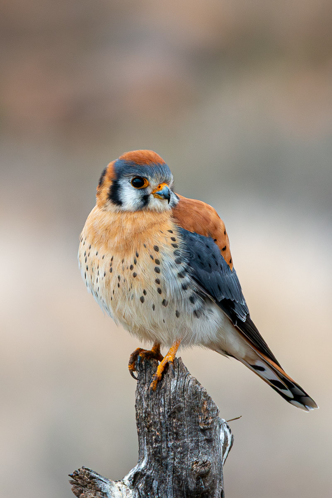
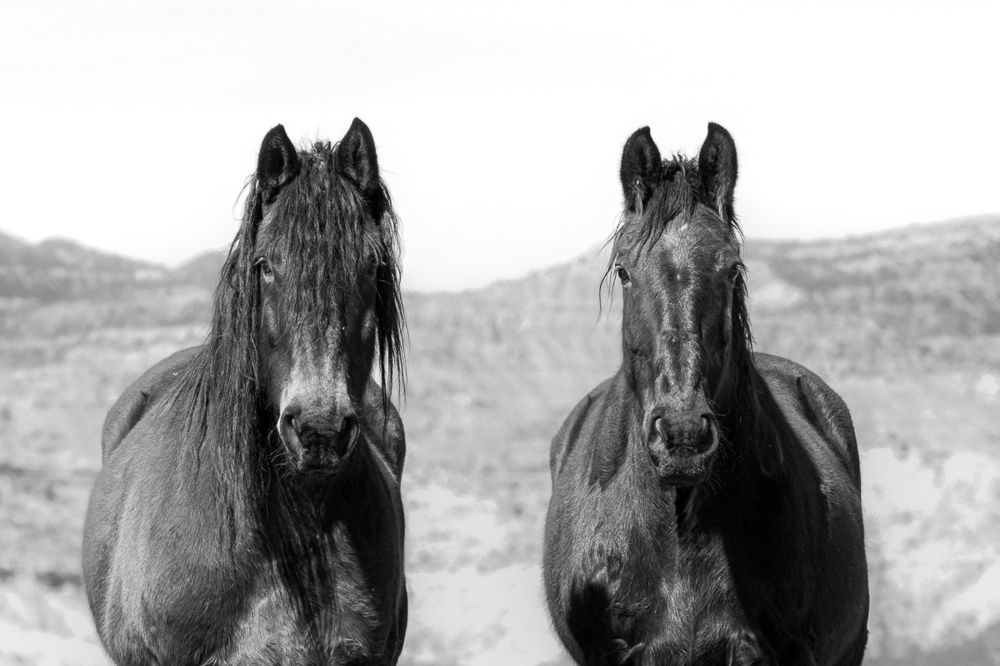

Birds CO
They are not all great, but it's been fun to catalog all the new birds I find.

Wildlife CO
They are not all great, but it's been fun.

Favorites
Some Favorites Over the Years.
Click albums to see some photos.
I do not photograph weddings any longer, but I have been enjoying getting outside and taking some pics.

They are not all great, but it's been fun to catalog all the new birds I find.

They are not all great, but it's been fun.
Some Favorites Over the Years.
© Chad Lippiatt Photo — All Rights Reserved